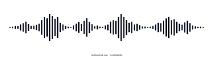

Digital Audio
Sound- a wave that is generated by an object vibrating in a medium such as air producing changes in pressure.
Waveform- sound is represented by a waveform that shows changes over time on a horizontal axis changes its pressure on the vertical axis.
Properties of a sound wave:
Wavelength - the distance between any point on a wave and the corresponding point on the wave.
Amplitude - refers the distance between the highest and lowest point on a waveform. Determines volume or loudness.

Frequency - refers to the number of complete cycles of a wave per unit of time. Its measured in hertz (Hz)
Pitch - is related to frequency, the higher the frequency the higher the pitch same goes for lower sound.
Digitizing Sound: digitizing entails 2 steps
sampling - the sound wave is sampled at a specific rate into discrete samples of amplitude values. The higher the rate the more accurate the data will be captured.
quantizing - each samples of amplitude values, will be mapped and rounded to the nearest value on a scale of discrete levels.
Resources used:
Link Intro Audacity
What you need in order to use:
Next Page